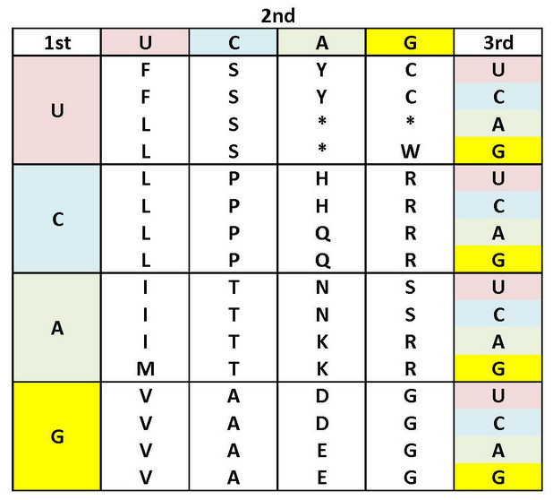

2.4.2 Final exam
The exam has three parts. The first one will be done in the computer, while the other two will be done in the paper and orally. The parts may be done in any order, following the disponibility of computers.
Every student will have a sequence for themselves, which will be one of the following:
CTACAGTATTGGATACGGGACTAGTACCGAATCCCTACTGCATTATACCTCACTC
Ask the teacher which one is yours.
1 Part 1
First, load the library seqinr using:
library(seqinr)Then save your sequence in a variable which is your first name, using the following example as a reference:
juan <- s2c(tolower("AAACCCGGGTTT"))Using this variable, calculate:
- The nucleotide statistics, using the
countfunction. For example, it can be used ascount(juan,1). - Calculate the GC content of the sequence using the
GCfunction.
2 Part 2
The teacher will give you one of the following questions:
- What are the nucleotides that compose DNA? What are the nucleotide pairs able to bond within the DNA?
- What are the nucleotides that compose RNA? How are nucleotides in a DNA strand translated into RNA?
- What is an open reading frame in a DNA strand? How can we identify them?
- What are codons? Given a codon, how can we know which aminoacid it will become?
- What is a gene? What is the full process for transforming it into a protein?
3 Part 3
Using the DNA nucleotide sequence, you will:
- Write the complementary DNA strand.
- Translate the original DNA sequence into the complementary RNA.
- Find an open reading frame in the RNA sequence. Tip: it will have 9 nucleotides.
- Translate it into codons using the table below.
